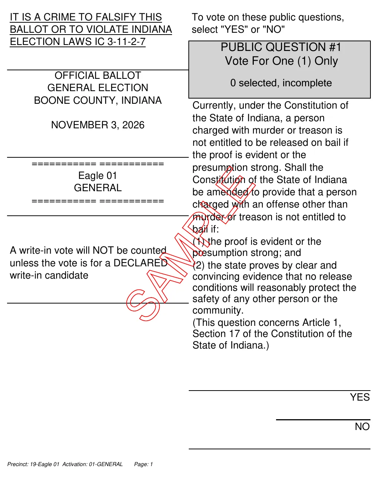
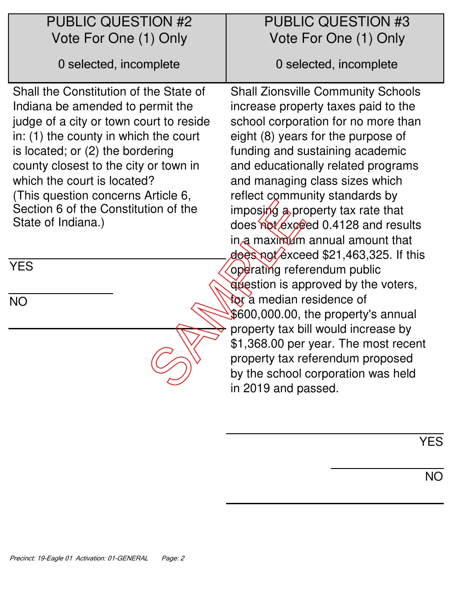
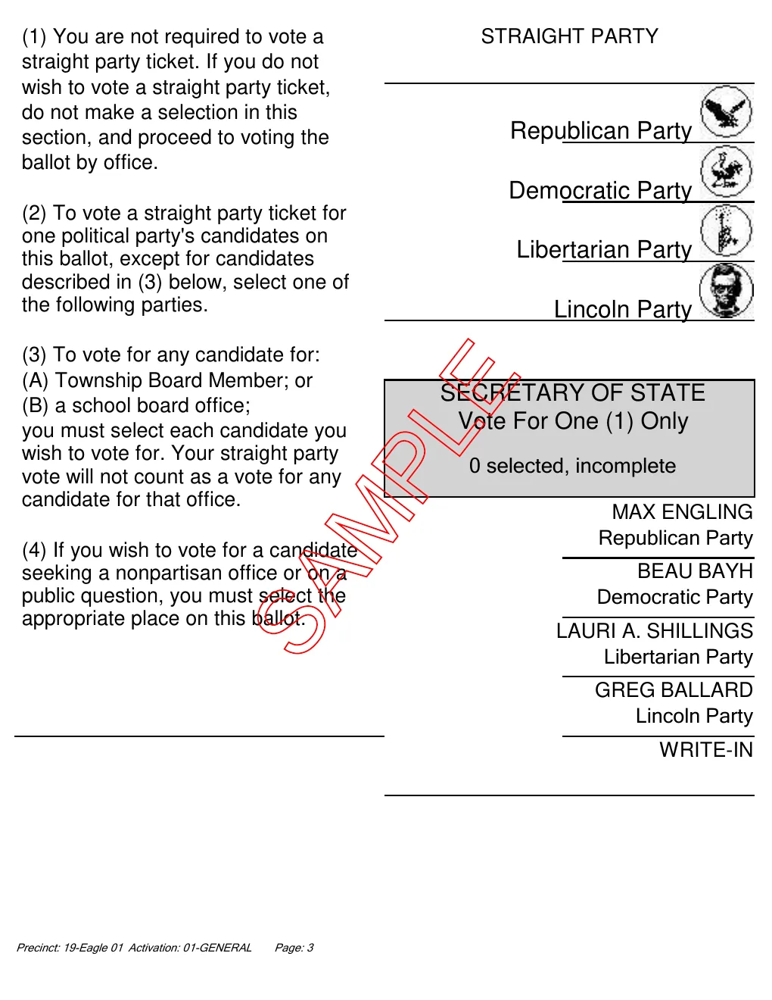
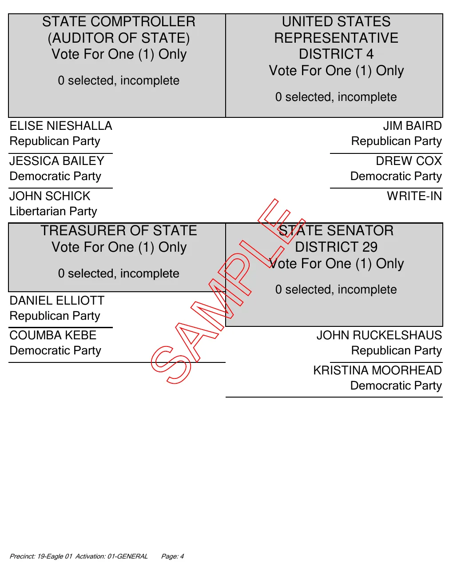
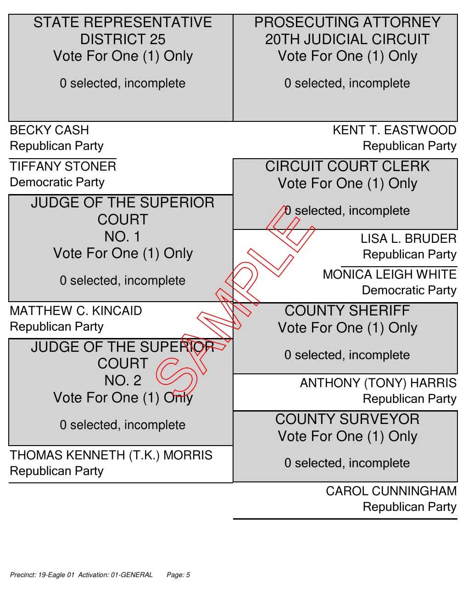
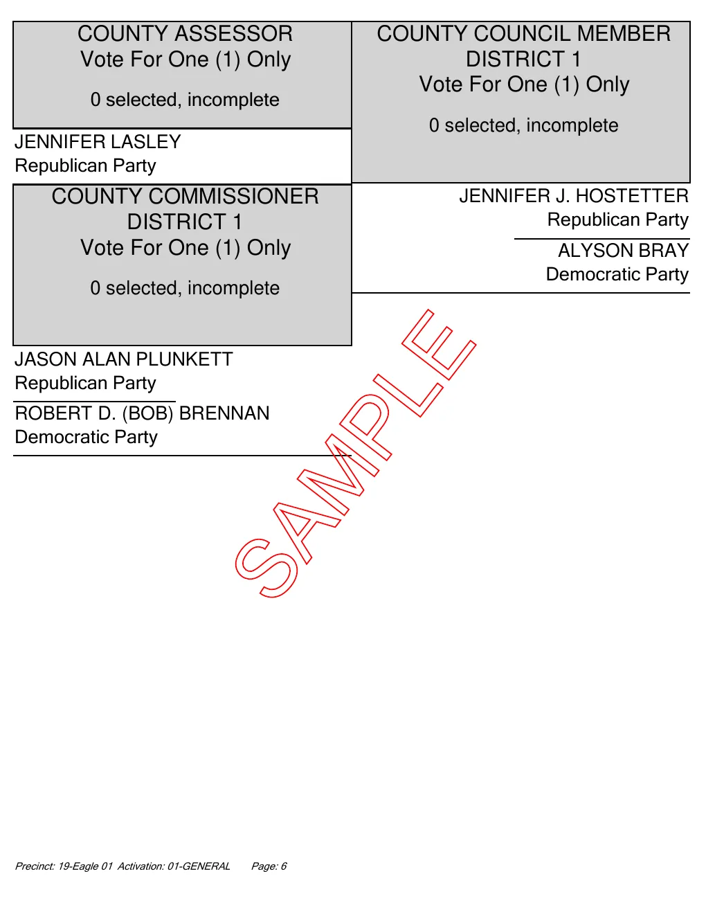
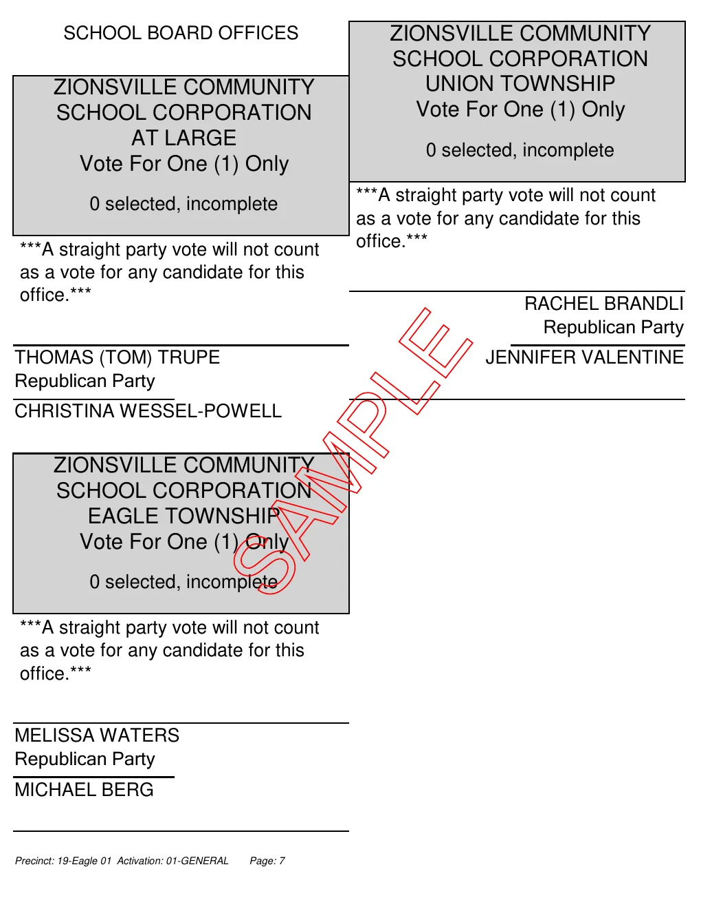
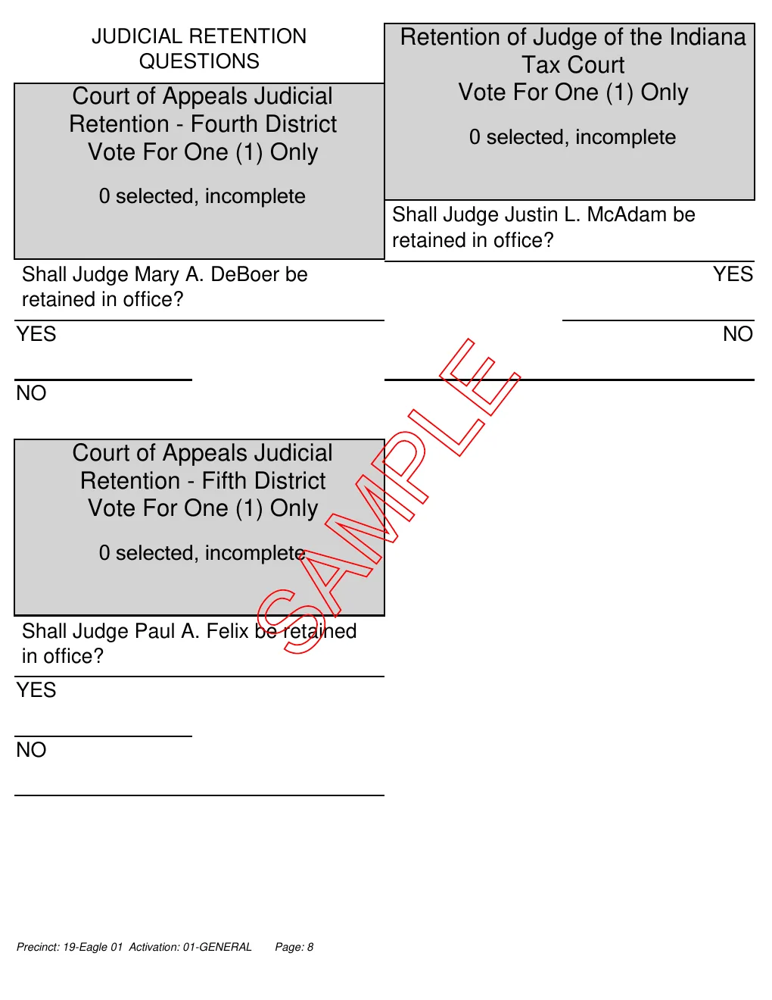

Who Has the Power? / Election Day / Today’s assignment
Reading a Real Ballot
Read the real sample ballot for one Zionsville precinct, find the facts printed on it, think about what it asks voters to decide, and plan how you would check a question before voting. Then gather your answers into Canvas.
Today’s question
What does a real ballot ask a voter to decide, and what would you need to know first?
Success criteria
- I can find the offices, candidates, and public questions printed on a real ballot.
- I can explain why a ballot is mostly local and state offices, and why that matters.
- I can name what I would need to know before voting on a public question, and a trustworthy place to find it.
Your assignment / 22 short questions
Look through the ballot below, then work down the page on your own. A word or short phrase is enough for Part 1. One or two sentences is enough everywhere else.
Drafts save in this browser until you submit in Canvas.
Today you will submit
- 22 short answers in four parts: a scavenger hunt, think about it, before you decide, and an exit question.
- Gather All My Work, then paste into the Canvas assignment and submit.
Your answers are private. You never have to say how you or your family would vote, and nobody is asked to share with the class. Political preferences are not scored. Use the sentence starters, read-aloud support, or voice typing as needed.
The ballot: Eagle 01, Zionsville
This is the official sample ballot printed by Boone County for the November 3, 2026 general election. The red word SAMPLE means it cannot be used to vote.
Open the ballot as a PDF ↗ Skip to Question 1 ↓
This is the ballot for one precinct. Zionsville is split into many precincts (Eagle 01 to Eagle 20, plus parts of Union Township), and some of them list different state legislature or school board races.








Source: Boone County 2026 General Election sample ballot ↗, pages 186 to 193, from the Boone County Clerk ↗. The pages here are copied from that file without changes.
Part 1: Ballot scavenger hunt
Every answer is printed somewhere on the ballot. A word or short phrase is enough.
Question 1
Question 2
Question 3
Question 4
Question 5
Question 6
Question 7
Question 8
Question 9
Question 10
Question 11
Question 12
Part 2: Think about it
Answer in one or two sentences.
Question 13
One or two sentences.
Start here
One reason might be ____ because ____.
Question 14
One or two sentences.
Start here
The ____ race helps decide control. One seat matters because ____.
Question 15
One or two sentences.
Start here
The ballot shows a real price so that voters ____.
Question 16
One or two sentences.
Start here
The ____ could affect my life because ____.
Part 3: Before you decide
Skill focus: Sourcing.
A voter only sees a few lines of text on the ballot. Good voters find out more before they vote. Choose one public question and answer about it.
Question 17
Question 18
One or two sentences.
Start here
This question asks voters whether ____.
Question 19
Two short items.
Start here
1. I would want to know ____. 2. I would want to know ____.
Question 20
One or two sentences.
Start here
I would look at ____ because ____.
Exit question
Last one. Then gather your work.
Question 21
One or two sentences.
Start here
I was surprised that ____.
Question 22
How this assignment is assessed / 5 points
Political preferences are not scored. Short writing, dictated text, and agreed paper responses can show the same learning.
- Finds the facts. Part 1 answers match what is printed on the ballot.
- Explains the ballot. Part 2 answers give a reason tied to the ballot, not a party preference.
- Plans a check. Part 3 names real questions and a trustworthy source for one public question.
File your assignment
- Check all 22 answers.
- Choose Gather All My Work. After any change, gather again.
- Paste into the Canvas assignment and submit. Check the submission confirmation.
Drafts save only on this browser. Nothing reaches your teacher until you submit in Canvas. Manual copy always selects the latest work.